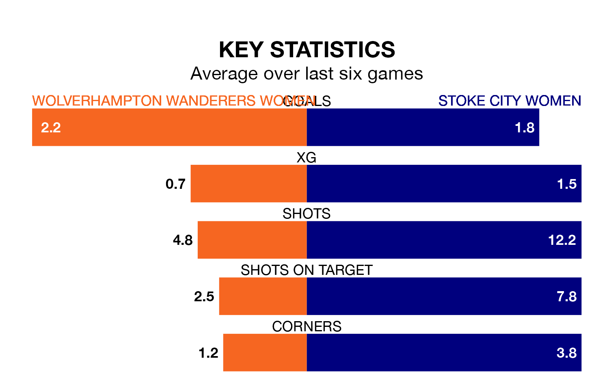

Wolverhampton Wanderers Women host Stoke City Women on Sunday in Women's National League Premier Division North.
In their last league match, on January 7, Wolverhampton Wanderers drew with Burnley Women 0-0 at home.
Stoke City lost, 2-1 away at Huddersfield Town Women.
With 19 goals in nine games so far this season, Wolverhampton Wanderers are scoring more than average in the league with 2.1 goals per game. And they are conceding fewer than average, letting in seven goals at a rate of 0.8 per game.
Stoke City are also above average scorers, with 2.0 goals per game, compared to a league average of 1.8. They have conceded 2.3 goals per game.
In the last five years, Wolverhampton Wanderers and Stoke City have played each other on five occasions. Wolverhampton Wanderers won three of them, Stoke City one, and they drew once.
On average, Wolverhampton Wanderers scored 3.4 goals and Stoke City 0.8 in those matches.
Their last meeting was on September 17, when Stoke City won 2-1 at home.
The hosts are fifth in the table after nine games, of which they have won five and drawn two, earning 17 points.
The away team are three places behind Wolverhampton Wanderers in eighth, with four wins and one draw putting them on 13 points.
Wolverhampton Wanderers are in mixed form in Women's National League Premier Division North, with three wins and a draw from their last six games.
And also with three wins and a draw over that period, Stoke City's form is identical – they have both taken 10 points from 18.
Updated: 08:51 (UTC), 25/01/24